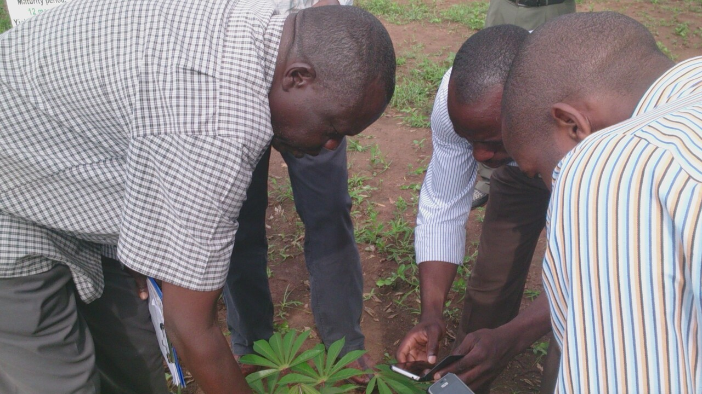
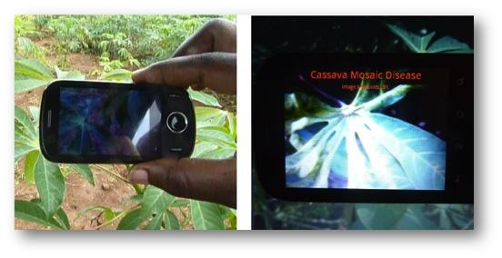
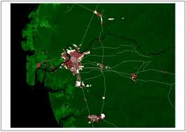

Project Implementation
MOBILE DATA COLLECTION IN THE FIELD

We use a customised version of the open data kit (screenshots above) to carry out data collection with phones. With this we can collect image and location data, and if an expert is performing the survey they can optionally provide a diagnosis which helps to calibrate our automated system.
OUR TEAM IN THE FIELD

Here is our team using a Tecno H6 to capture images from a plantation in the Namulonge crop resource research institute, with staff from the institute. Where the experts are present, they give us a diagnosis of the health of the plant to accompany the image and position data. This information is uploaded by the phone to the app engine, and displayed immediately on the map on the home page. (For remote areas with limited network coverage, we can also cache the data on the phone and upload in bulk once network is available).
MAPPING THE DISEASE SPREAD

On the left we have 13 example plants, with their disease levels shown in the dark boxes. The contour lines indicate our calculation of the mean disease level. The histograms on the right show our predictions at what the distribution of the five disease levels will be at positions A, B and C. Based on this model, we can use our uncertainty at different places on the map to dynamically change the survey schedule (divert the survey teams to the most informative areas) and to update prices for data collection by extension workers (increase prices for areas where data is more useful). Ultimately such maps are used to plan the way in which limited resources can best be used to limit the spread of disease, for example by starting training programs for farmers in high risk areas, or calculating the best places to take healthy planting material to replace the crops in the most affected areas.
Diagnosis of crop disease in fields based on crop images

We will develop applications for the mobile phone that an extension worker or farmer can use to diagnose cassava viral disease in the field. The application will use techniques from machine learning to analyze crop images and diagnose the disease as well as its severity
SPECTROMETRY MOBILE PHONE add-ons

We will investigate the development of a low-cost portable spectral imaging device that can be appended to a phone and used for two purposes: first, early detection of diseases in plants where symptoms are not visible to the naked eye and second, inspection of planting materials to determine if they are disease-free. There has been a growing set of examples of diseases which can be detected early through the use of spectrometry and hyperspectral imaging for crops such as rice, wheat, citrus and tomato (Sankaran et al, 2010). Laser-induced fluorescence spectrometry, for example, has been shown to be an effective method for early-onset and non-destructive disease detection. Two types of fluorescence are produced by green leaves: (i) blue-green fluorescence in about the 400–600 nm range, and (ii) chlorophyll fluorescence in about the 650–800 nm range. Spectroscopic analysis of these can be utilized to identify signatures corresponding to particular diseases, as well as identifying nutrient deficiencies, and stresses from environmental conditions.
SPATIO TEMPORAL MODELING

One of the advantages of the mobile survey technology is the potential it brings to increase the frequency and spatial extent of sampling for disease and vectors. With the large quantity of observations to be obtained in this work, and consequent statistical modeling opportunity, we expect the study to yield a set of unique datasets giving insight into the spread of crop disease.